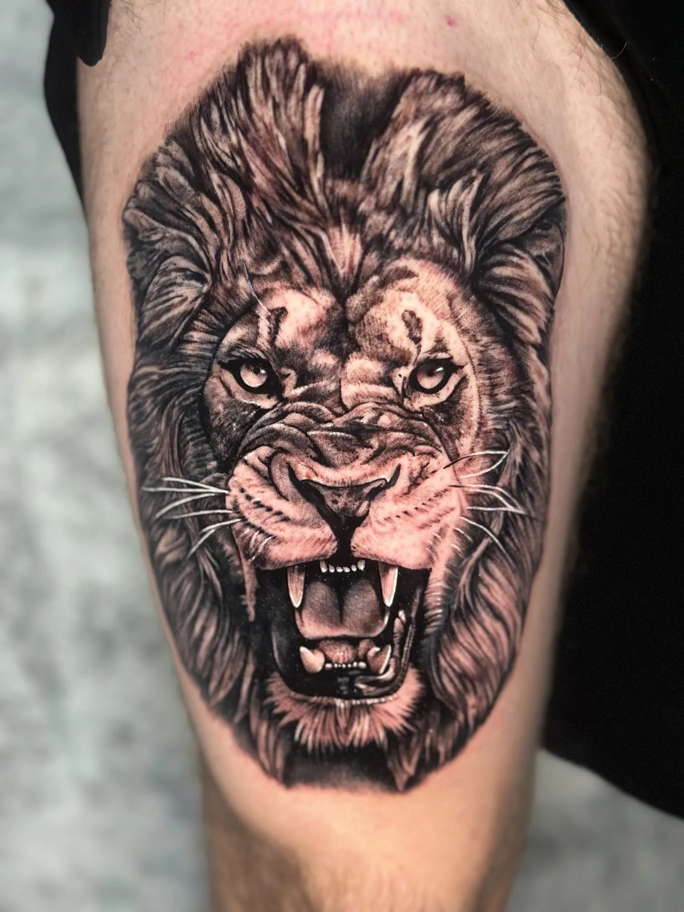
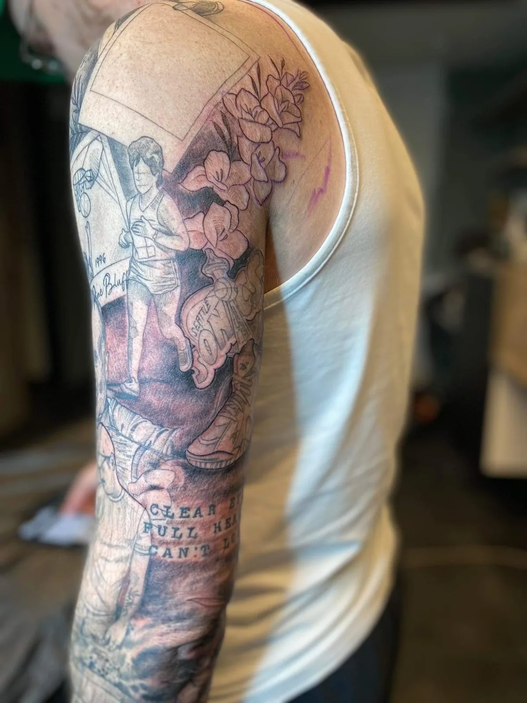
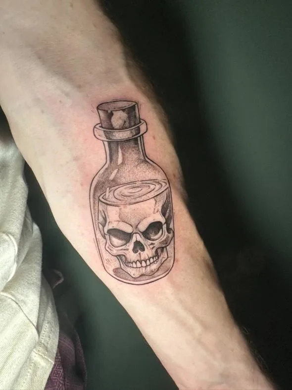
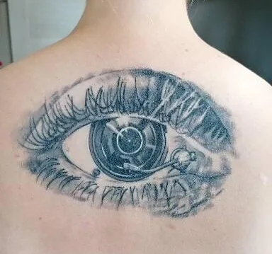
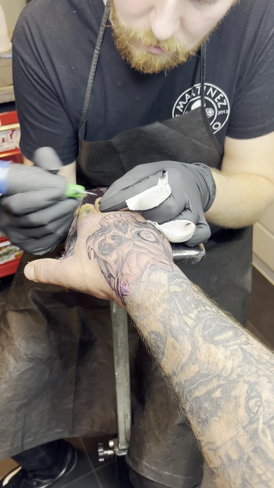

Elke sleeve begint met een gesprek.
Zwart en grijs, arm- en beensleeves en een tweede leven voor oude tattoos. Stuur Michaël een berichtje, dan bekijken jullie samen je idee.
Recht uit de studio.
Grote stukken die over meerdere sessies groeien, en kleine die evenveel aandacht krijgen. Alles in zwart en grijs, alles op maat getekend.





Jouw idee op dit blad?
Stuur een foto, een schets of gewoon een paar woorden. Michaël tekent het uit voor jouw huid.

Eerst praten, dan pas de naald.
Een goede tattoo begint lang voor de machine aanstaat. Zo gaat het bij Michaël.
Je stuurt je idee
Een berichtje op Instagram is genoeg: wat je wil, waar het moet komen en hoe groot. Foto's of voorbeelden mogen erbij.
Jullie tekenen het samen
Michaël denkt mee en geeft advies waar het nodig is, tot het ontwerp echt van jou is.
Sessie per sessie
Een sleeve zet je niet op één namiddag. Je bouwt hem rustig op, in een propere privéstudio, zonder volle wachtzaal.
Oude tattoo, nieuw leven.
Vervaagd, uitgelopen of gewoon niet meer van deze tijd? Michaël werkt een oude tattoo bij of verwerkt hem in een nieuw stuk. Stuur een foto, dan kijkt hij wat er kan.
Stuur een fotoen weer scherp
"Last minute een afspraak kunnen scoren voor 'renovatie' van een 15 jaar oude tattoo"Cindy V. op Google
uit 118 reviews op Google
"Ik ben eind 2024 bij Martinez Tattoo binnengestapt om mijn idee voor een armsleeve te bespreken. Ondertussen zijn we al even bezig aan een legsleeve."Steffi A. op Google
"Hij luistert naar wat je wil en geeft advies waar nodig"Mireille W.
"Hij weet goed wat hij doet, werkt super hygiënisch en is een fijne persoon om bij langs te gaan."Silke C.
Enkel op afspraak.
Martinez Tattoo is een privéstudio, je loopt hier niet zomaar binnen. Stuur een berichtje en Michaël plant samen met jou een moment dat past.
- Studio
- Neerstraat 17, 9220 Hamme
Route plannen - Boeken
- Via DM op @martinetmichael
- 4,9 uit 118 reviews